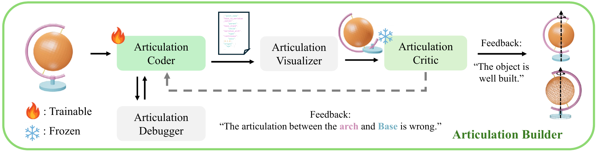
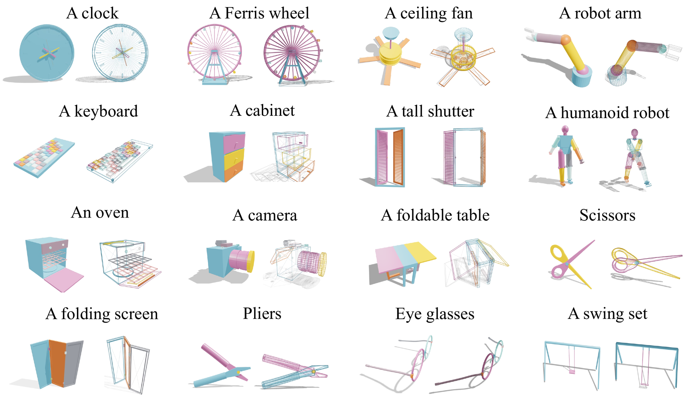
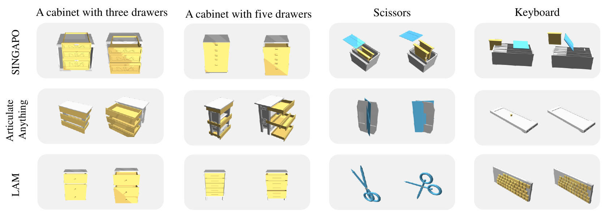
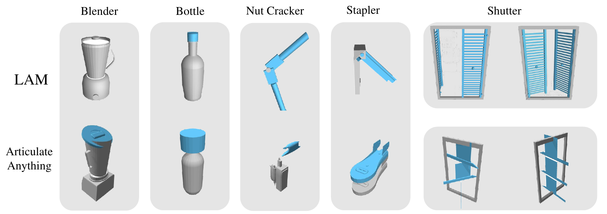
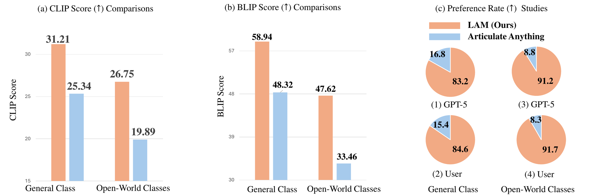
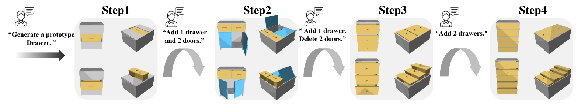

These are real objects generated by LAM, exported to URDF and rendered live in your browser. Drag to rotate, scroll to zoom, and use the joint sliders to articulate each model. Use the arrows to browse examples.
We introduce LAM, a system that explores the collaboration between large language models and vision-language models to generate articulated objects from text prompts without a visual prior or pre-built 3D assets. We formulate articulated object generation as a unified code-generation task, in which geometry and articulation are co-designed from scratch.
Given an input text, LAM coordinates a team of specialized modules to procedurally generate code that represents the desired articulated object. It first reasons about the hierarchical structure of parts (links) with a Link Designer, then writes, compiles, and debugs code with Geometry & Articulation Coders, and self-corrects via Geometry & Articulation Checkers. The code serves as a structured, interpretable bridge between individual links, ensuring correct relationships among them.
Experiments demonstrate the power of leveraging code as a generative medium within a collaborative system, showcasing its effectiveness in automatically constructing complex articulated objects.
Unlike prior work that relies on structured inputs (images, videos, graphs, or meshes) and is capped by a scalability ceiling on high-part-count objects, LAM unifies the coupled problem of geometry and articulation into a single, expressive code representation. Because the cost of code is largely independent of geometric resolution, LAM can describe complex objects with a large, variable number of links — e.g. a keyboard with 20+ keys.
An LLM that decomposes the prompt into a hierarchy of shapes → parts → links and their relationships.
Translates the link layout into executable code, composing parametric primitives (e.g. Three.js) into each link's mesh and pose.
Generates joint code — type, parent–child hierarchy, position, and motion axis — via a Joint Assembly Solver.
Deterministic Python/JS checks that fix grammar and code-level errors before rendering.
2D & 3D VLMs render and analyze the design, giving targeted feedback in a closed-loop refinement.
A new dataset of 2K text–code–articulated-object pairs for systematic training and validation.


On the masked-URDF reconstruction task, the default LAM* substantially surpasses prior methods, and finetuning open-source Qwen3-VL-8B on LAMBench yields large gains over its zero-shot counterpart.
| Method | Five Classes ↑ | General Classes ↑ |
|---|---|---|
| Real2Code | 13.5% | — |
| Articulate Anything | 40.3% | 48.9% |
| LAM (Qwen3-VL-8B, zero-shot) | 36.8% | 44.3% |
| LAM (Qwen3-VL-8B, finetuned) | 51.6% | 49.6% |
| LAM* (default) | 77.1% | 68.2% |
On the shared in-distribution classes, LAM* achieves the best text–visual alignment (CLIP, BLIP) and the highest GPT-5 pass rate for functionally-correct articulation.
| Method | CLIP ↑ | BLIP ↑ | GPT-5 pass ↑ |
|---|---|---|---|
| CAGE | 27.65 | 53.92 | 53.9% |
| SINGAPO | 30.43 | 56.21 | 58.8% |
| Articulate Anything | 28.23 | 56.99 | 65.3% |
| LAM (zero-shot) | 27.63 | 55.92 | 66.1% |
| LAM (finetuned) | 29.55 | 58.38 | 69.3% |
| LAM* (default) | 31.94 | 63.76 | 77.0% |
Shared classes: Storage Furniture, Table, Refrigerator, Dishwasher, Oven, Washer.




@inproceedings{gao2026lam,
title = {LAM: Language Articulated Object Modelers},
author = {Gao, Yipeng and Ge, Yunhao and Cai, Peilin and Seita, Daniel and Itti, Laurent},
booktitle = {Proceedings of the IEEE/CVF Conference on Computer Vision and Pattern Recognition (CVPR)},
year = {2026}
}